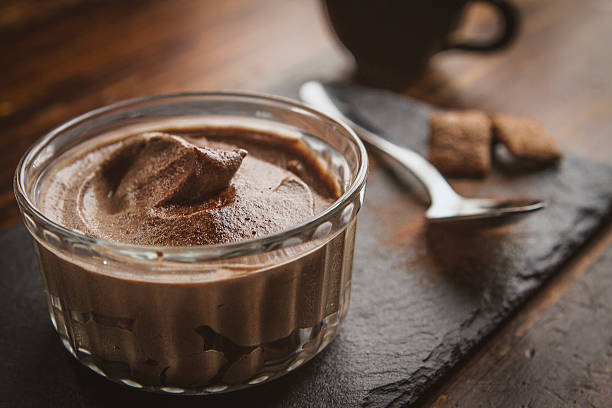

Chocolate Mousse
A rich and decadent chocolate dessert that's both elegant and easy to prepare.

Ingredients:
- Dark chocolate
- Heavy cream
- Eggs
Instructions:
- Melt chocolate and let cool slightly.
- Whip cream until stiff peaks form.
- Beat egg yolks into chocolate.
- Fold chocolate mixture into whipped cream.
- Chill until set.
- Preparation time:
- Approximately 30 minutes.
- Servings:
- Makes 6 servings.